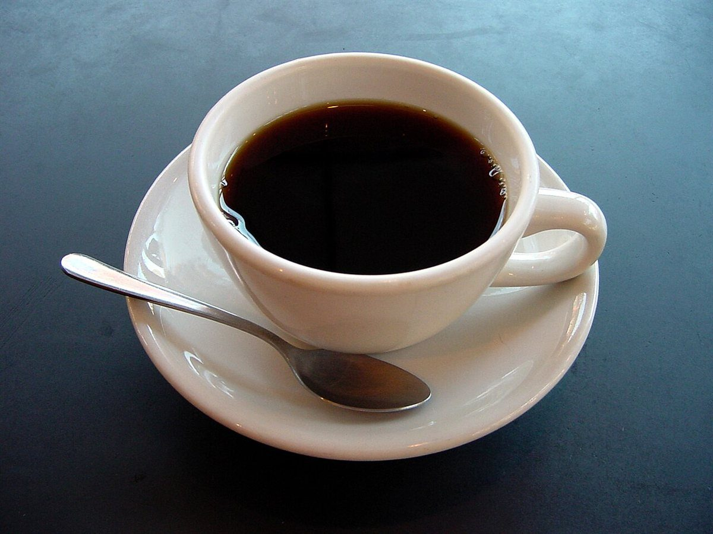

カフェ / 山形県鶴岡市
でずぼCafe
山形県鶴岡市にあるカフェ「でずぼCafe」のご案内ページです。営業時間やメニューなど、詳しいことは準備中。まずは電話かInstagramで。
01/05天地無用

制作側の連想
荷物の「取扱注意マーク」から五ページ
店名の由来は分かりません。制作側は、荷物の箱に貼られる「天地無用」「割れ物」などの取扱注意の印を思い浮かべ、それを五つのページの見出しにしました。お店の理念・由来とは無関係の、制作側の連想です。
ほかの四つの印
ページの入り口
写真は鶴岡市のものではありません。国外・撮影地不明のフリー素材をイメージとして使っています。

ご案内
お店のこと(確認できたものだけ)
| 所在地 | 〒999-7204 山形県鶴岡市湯温海甲107 |
|---|---|
| 電話 | 090-2367-4770 Googleマップ記載の番号です |
| 営業時間 | 準備中 |
| 定休日 | 準備中 |
| ご予約 | 準備中 |
| 駐車場 | 準備中 |
| SNS | Instagram @dezubo_cafe |